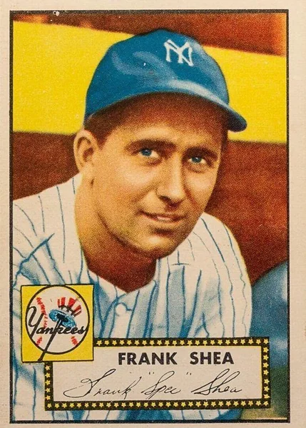
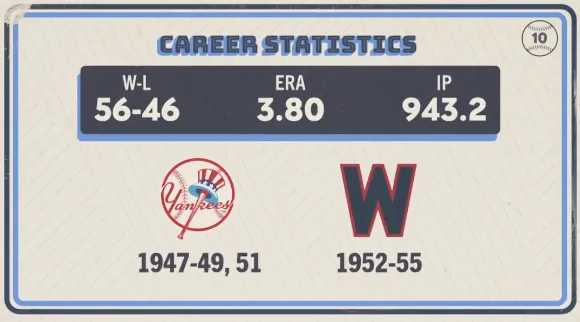

Spec Shea "The Naugatuck Nuggett"
Career Highlights & Facts
(Facts are AI-generated and may require verification)
- This right-hander became the first rookie pitcher in history to earn a victory in an All-Star Game.
- He was a key contributor to two World Series championships for the Yankees, including a performance where he secured a win in the deciding game of a series.
- Known for his wit and personality, he was once tasked with teaching a famous Hollywood actor how to pitch and hit in the style of the 1930s for a major motion picture.
Would you like to find out more about Spec Shea?
Career Totals
| WAR | W | L | ERA | G | GS | SV | IP | SO | WHIP |
|---|---|---|---|---|---|---|---|---|---|
| 7.0 | 56 | 46 | 3.80 | 195 | 118 | 5 | 943.2 | 361 | 1.426 |
Statistics via Baseball-Reference.com
The Original Clue
